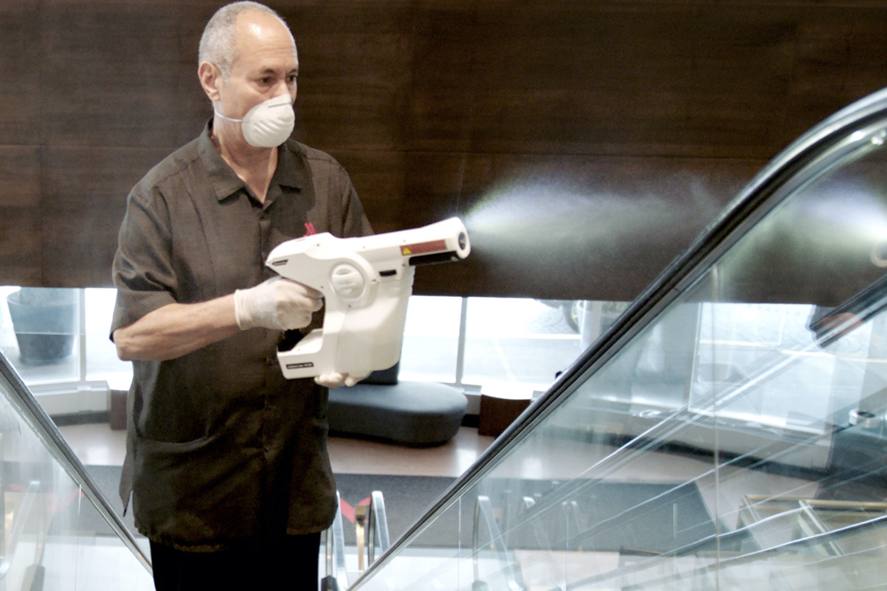
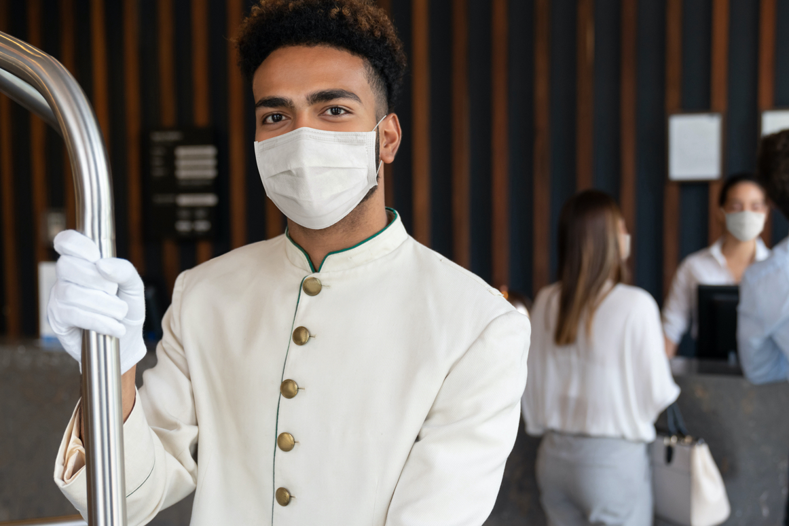
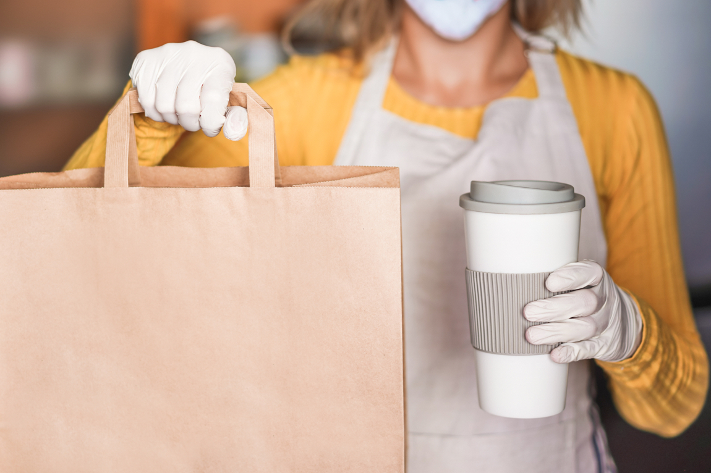

OUR RESORTS
JOIN NOW
TERMS AND CONDITIONS
|
|
OUR RESORTS |
JOIN NOW |
TERMS AND CONDITIONS |
We are closely monitoring the Centers for Disease Control and Prevention and World Health Organization's statements regarding
the novel coronavirus (COVID-19) cases and following guidelines from these
agencies and the local health departments.
The wellbeing of our guests and associates is of paramount importance(updated March 11,2022).
As we welcome you back to our hotels around the world, we are committed to providing you with a safe environment that aligns with expert
protocols for working to defeat COVID-19. Consisting of in-house and outside experts in food and water safety, hygiene and infection prevention,
and hotel operations, our Marriott Cleanliness Council is redefining our cleaning and safety standards. We will actively monitor and evolve our
solutions to ensure a continued focus on the health and safety of our guests and associates.
.png)
When guests check into Marriott's hotels over the next few months, they will notice a number of
additions to the company's regimen designed
to set an even higher standard of cleanliness for the hotels. Specific area of focus include:
Providing a safer environment for our guests and associates is a top priority.
For the U.S. - fully vaccinated guests are no longer required to wear face coverings or social distance in indoor or outdoor areas of the hotel, unless required by local law. All unvaccinated Associates are required to wear face coverings when indoors.
For Canada, face coverings are optional for guests in jurisdictions where face coverings are not required to be worn indoors. All associates in Canada will continue to be required to wear face coverings.
For Caribbean and Latin America, face coverings are required for guests and associates in all indoor public areas.
|  | Surface Areas and Public Spaces
In public spaces, the company has added to its already rigorous cleaning protocols,
These new enhanced cleaning technologies including electrostatic sprayers to
|
Guest Contact
To help alleviate the risk of COVID-19 transmission through person-to-person
|
 |
|  | Food Safety
At Marriott, food handlers and supervisors are trained on safe food preparation and
|